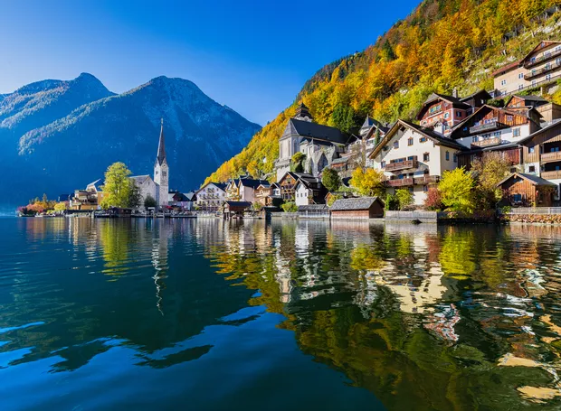

Turismo na Europa

Os melhores pontos turisticos da Europa
1. Hallstatt, Áustria
Pequena e encantadora, Hallstatt é famosa por suas casinhas rústicas spremidas entre o lago Hallstatter See e as montanhas. A vila está na ista de patrimônios mundiais da UNESCO desde 1997 e é um lugar de muita história e minas de sal!
2. Bruges, Bélgica

A sensação é de estar na idade média, talvez porque a cidade foi cidade construída em 1128. Em Bruges é possível passear de barco e assim chegar às cidades vizinhas. Muito charmosa!
3. Ponte Rakotz, Kromlau, Alemanha

Também conhecida como “Ponte do Diabo”, ela foi construída há mais 150 anos e parece muito um cenário de filme de Hobbits. O que encanta é o círculo que a ponte e o seu reflexo formam. O parque em que ela está localizada pode ser visitado, mas cruzá-la não é permitido.
4. Porto Katsiki, Lefkada, Grécia

Porto Katsiki é uma das mais lindas praias da Grécia e é famosa pela água e céu azul clarinho (e por ser um dos destinos favoritos dos turistas, é claro!)
5. Procida, Itália

A combinação da água azulzinha e as casinhas coloridas faz de Procida o clichê de um destino turístico italiano. Apesar de ser uma ilha pequena, ela abriga 10 mil habitantes e recebe muitos turistas durante o ano todo.
6. Procida, Itália
A combinação da água azulzinha e as casinhas coloridas faz de Procida o clichê de um destino turístico italiano. Apesar de ser uma ilha pequena, ela abriga 10 mil habitantes e recebe muitos turistas durante o ano todo.